Pas de signal
d'ouverture
85:SGA 15 sec après ordre ouverture
Le frein reste
levé. Les portes cabines
resteront fermées tant que le contact frein ne sera pas revenu normal
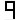
Le frein ne s'est pas levé
Le contrôle fermeture de porte cabine ou le
contrôle verrouillage portes palières n'est pas obtenu ;annulation
d'ordre après 5 essais
En porte auto un contact de réouverture est
resté fermé (s'affiche à chaque utilisation) ;la porte reste ouverte
temps de course entre niveau trop long
:antipatinage. L'appareil se met à l'arrêt porte ouverture
L'appareil ne s'est pas recalé après 3 essais
;la cabine stoppe
Après 15 sec en PV pas de top d'arrêt (idem en
1 ou 2 vit) ;arrêt immédiat ,tentative d'ouverture si en zone de porte
Un contacteur est resté collé avant un
enregistrement ;enregistrement annulé ,les portes s'ouvrent
Déplacement de cabine sans appel ;arrêt au 1er
niveau rencontré et attente d'un ordre
Contacts 136:U et 136:N (ralentissement) ouverts
ensembles, cabine gardée à l'étage portes ouvertes
Enregistrement Montée ou descente alors que
cabine déjà en extrême ;appel effacé
Sur config à 2 lignes impulseurs ,pendant la
marche la sélection ne lit pas une/des info/s de ralentissement
Suite à un ordre, non départ de la cabine au
bout de 5 sec en électrique. ou 8 sec en hydraulique
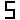
Coupure de chaîne de sécurité en marche ;arrêt
immédiat
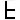
Contact 90° déclenché ou une thermistance a déclenché
;arrêt de la cabine à un étage porte ouverte
Le signal d'un top oscillateur ou impulseur est
resté donné plus de 15 sec.
Course de synchronisation (recalage)
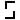
Signifie que l'appareil est en inspection
Signifie que l'appareil est hors service
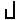
Le
signal du "contacteur principal"provenant de V3F-20 n'arrive
pas sur
EPB pendant un démarrage ou un arrêt
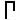
Le
système de traction V3F-20 perd la position de cabine en gaine et il
communique à EPB qu'une marche de synchronisation est nécessaire
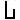
Le
V3F-20 exécute la marche l'initiation
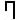
La
communication série n'est pas présente entre les deux armoires de commande
(par l'intermédiaire de la carte sur la carte EPB). Uniquement
pour les installations duplex
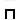
Arrêt transmission du microprocesseur
Pendant
le démarrage, dans les installations à câble de traction TAC-M, le relais
de signal d'arrêt (523) est activé
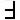
Durant
la décélération d'étage dans les installations de câbles de traction
TAC-M, le relais de signal d'arrêt (523) n'est pas activé
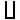
HYD:pas de top d'arrêt durant la PV
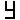
V.3.F:alarme sur V.3.F
HYD:marche en nivelage descente
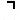
HYD:marche en nivelage montée
Défaillance
interne
Défaut
ChA ou ChB ou ChC
Croisement du câblage ChA et ChB ou mauvaise polarité 77
Nombre incorrect de drapeaux d'étage ou étages mal programmés
Distance
de décélération trop longue
ChD
ne fonctionne pas.
Pendant
la fonction Hl ou H7, le commutateur ChC arrêt ou 77 manque
Pendant
la fonction H7 les positions de drapeau d'étage
sont incorrectes